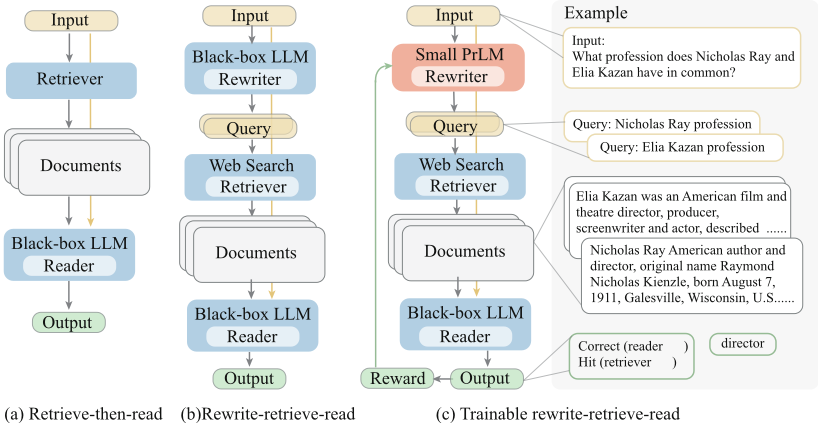
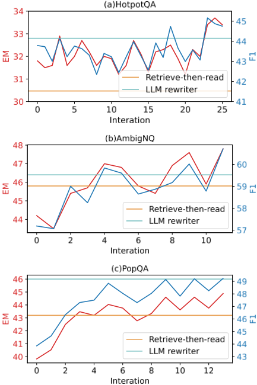

面向检索增强大语言模型（LLM）的查询改写（Query Rewriting for Retrieval-Augmented Large Language Models）
论文针对 retrieve-then-read 检索增强流程中'输入文本与检索所需知识之间存在天然鸿沟'的问题，提出 Rewrite-Retrieve-Read 新框架，在检索前增加查询改写步骤。方法提供两种方案：用 few-shot 提示让冻结 LLM 充当 rewriter；或微调 T5-large 小模型作可训练 rewriter，先在 LLM 改写且 reader 答对的伪数据上 warm-up，再用 PPO 强化学习以 LLM reader 的反馈（EM/F1/Hit 加权）为奖励继续训练。实验在 HotpotQA、AmbigNQ、PopQA 与 MMLU 上进行，reader 为 ChatGPT 与 Vicuna-13B，检索器用 Bing 搜索引擎；结果显示查询改写带来一致提升，并修复了 HotpotQA 上标准检索反而损害 reader 的问题，检索命中率分析表明改写对检索端的改善大于对 reader 端。对团队而言，这是知识库问答等 RAG 流水线中查询改写模块的直接方法参考，其'用小模型对齐冻结工具'的思路也可迁移到其他工具调用场景。
在 retrieve-then-read 检索增强框架中，检索查询通常直接使用原始输入（数据集问题或黑盒 LLM 的生成结果），始终固定，而输入文本与实际需要检索的知识之间不可避免存在鸿沟；现有工作要么适配 retriever（如微调 dense retriever），要么设计 retriever-reader 交互提示，均忽视了对查询本身的适配，限制了检索增强 LLM 的性能。
提出 Rewrite-Retrieve-Read 三步流水线：(i) 用 LLM（few-shot 提示，含 'Think step by step' 指令）或可训练小模型将输入改写为检索查询；(ii) 用 Bing 搜索引擎检索（拼接 snippets，或抓取 URL 后用 BM25 筛选）；(iii) 冻结 LLM reader（ChatGPT gpt-3.5-turbo / Vicuna-13B）阅读作答。可训练方案用 T5-large (770M) 作 rewriter：先在 LLM 改写、且 reader 预测正确的伪数据上做 warm-up 微调，再用 PPO 策略梯度强化学习（含 value network 与 GAE），奖励为 reader 预测的 EM、F1 与答案命中 Hit 的加权和，并加 KL 散度正则防止偏离初始化。
在 HotpotQA、AmbigNQ、PopQA 三个开放域 QA 数据集上，frozen 与 trainable rewriter 的查询改写均带来一致性能提升；HotpotQA 上标准检索反而损害 reader，加入改写步骤后分数回升（具体表格数值未在正文中给出）
MMLU 上：ChatGPT 作 reader 时改写在多数类别提升（social sciences 除外）；Vicuna-13B 作 reader 时四个类别增益均大于 ChatGPT，说明更强 reader 的参数化知识更难被外部知识补偿
AmbigNQ 检索分析：BM25 内容筛选比 snippets 召回更好，改写在两种设置下均提升命中率；可训练 rewriter 训练后 snippet 命中率为 73.4%
AmbigNQ 'None' 查询分析：无需检索即可答对的问题集合上，LLM rewriter F1 为 71.9%、T5 rewriter 为 67.1%；若以'无检索答对但检索后答错'为集合，F1 分别为 78.7% 与 77.4%
RL 训练曲线上 AmbigNQ 与 PopQA 在 3-4 个 iteration 后超过基线；PopQA 上 trainable rewriter 超过标准检索但不及 LLM rewriter，表明伪数据蒸馏次优
区别于以往只适配 retriever（如 RePlug 微调 dense retriever 迎合冻结 LLM）或只设计 retriever-reader 交互提示（如 ReAct、DSP 的多轮交互流水线）的工作，本文自称是首个对流水线输入本身（查询）做适配的框架：在冻结 retriever 与黑盒 LLM reader 之前插入改写步骤，并提出用可训练小模型 + RL（以 reader 反馈为奖励）对齐冻结模块的方案；且只需单轮检索，避免了 ReAct/DSP 类方法对每个样本多次调用 LLM 的开销。
相关度级别：high
命中能力域：3.1 上下文工程与记忆 | 3.2 提示工程 | 3.3 Agent 架构与工具使用 | 3.5 评测与可靠使用
理由：直接命中 3.1 上下文工程与记忆域的核心技术 RAG/检索增强：查询改写位于检索之前，决定进入 LLM 上下文的文档质量，是团队知识库问答、文档与代码检索类工具的第一道质量关口。frozen rewriter 的 few-shot 提示设计涉及 3.2 提示工程；'用可训练小模型对齐无 trainable 参数的冻结外部工具（搜索引擎）'的思路与 3.3 工具使用相关；hit rate 与 reader upper-bound 分离评测、以及'单轮改写替代多轮 Agent 调用以降低资源消耗'的论证对 3.5 的评测方法与成本效率优化有借鉴。
建议动作：深入精读并做内部分享
arXiv:2305.14283v3 [cs.CL] 23 Oct 2023
面向检索增强大语言模型的查询重写
Xinbei Ma 1,2, ∗ , Yeyun Gong 3, #, † , Pengcheng He 4, # , Hai Zhao 1,2,† , Nan Duan 3
1
上海交通大学计算机科学与工程系 2 上海交通大学智能交互与认知工程上海市教委重点实验室
3 微软亚洲研究院 4 微软 Azure AI
sjtumaxb@sjtu.edu.cn, zhaohai@cs.sjtu.edu.cn,
{yegong, nanduan}@microsoft.com , Herbert.he@gmail.com
大语言模型（LLMs）在“先检索后阅读”（retrieve-then-read）流水线中扮演强大的黑盒阅读器角色，在知识密集型任务中取得了显著进展。本工作从查询重写（query rewriting）的视角出发，为检索增强大语言模型引入了一个新框架——Rewrite-Retrieve-Read，以取代以往的“先检索后阅读”流程。与先前专注于适配检索器或阅读器的研究不同，我们的方法关注搜索查询本身的适配，因为在检索中，输入文本与所需知识之间不可避免地存在差距。我们首先提示一个 LLM 生成查询，然后使用网络搜索引擎检索上下文。此外，为了使查询与冻结模块更好地对齐，我们为该流水线提出了一种可训练的方案。我们采用一个小型语言模型作为可训练的重写器（rewriter），以适配黑盒的 LLM 阅读器。重写器通过强化学习，利用 LLM 阅读器的反馈进行训练。评估在下游任务上进行，包括开放域问答（open-domain QA）和多项选择问答（multiple-choice QA）。实验结果显示出一致的性能提升，表明我们的框架被证明是有效且可扩展的，并为检索增强大语言模型 1 带来了一个新的框架。
大语言模型（Large Language Models, LLMs）在人类语言处理方面展现出卓越的能力，并在少样本或零样本设置中表现出非凡的可扩展性与适应性 (Ouyang et al., 2022; Brown et al., 2020; Chowdhery et al., 2022)。然而，其训练过程依赖于大规模的高质量语料库，却缺乏对真实世界的感知。因此，LLM 仍然不得不面对幻觉 (Yao et al., 2023; Bang et al., 2023) 和时间错位 (Röttger and Pierrehumbert, 2021; Luu et al., 2022; Jang et al., 2022) 的问题。这影响了 LLM 的可靠性，阻碍了其更广泛的实际应用，因为 LLM 响应与真实世界之间的一致性需要进一步验证。已有工作证明，将外部知识（即非参数知识）与内部知识（即参数知识）相结合可以有效缓解幻觉，尤其是对于知识密集型任务。事实上，检索增强 LLM 已被证明极为有效，以至于被视为缓解朴素 LLM 生成中事实性缺陷的标准解决方案。检索增强被用于选取相关段落作为语言模型的外部上下文，这即检索后阅读（retrieve-then-read）框架 (Lewis et al., 2020b; Karpukhin et al., 2020; Izacard et al., 2022)。以开放域问答任务（open-domain QA）为例，检索器首先针对问题搜索相关文档。随后，LLM 接收该问题与这些文档，进而预测答案。
∗ 本工作为在 3 微软亚洲研究院实习期间完成。# 同等贡献。†通讯作者。
本文部分受到长三角科技创新共同体联合研究项目（No. 2022CSJGG1400）的资助。
1 https://github.com/xbmxb/RAG-query-rewriting
由于大多数 LLM 只能通过推理 API 访问，它们在流水线中扮演黑盒冻结阅读器的角色。这使得先前需要完全访问权限的检索增强方法 (Lewis et al., 2020b; Guu et al., 2020; Izacard et al., 2022) 不再可行。近期关于检索增强语言模型的研究更加侧重于面向 LLM 的适配。一种思路是训练一个稠密检索模型来适配冻结的语言模型 (Shi et al., 2023)。通过将来自 LLM 的反馈用作训练目标，检索模型被调优以提供更好的 LLM 输入上下文。另一条研究路线则聚焦于检索器与阅读器之间交互的设计 (Yao et al., 2023; Khattab et al., 2022)，其中检索器和阅读器通常都是冻结的。其思想是通过精心设计的提示或复杂的提示流水线来激发涌现能力。与外部知识的多次交互使 LLM 能够逐步逼近正确答案。
然而，仍有一些问题有待解决。现有方法忽略了对查询（query）的适配，即“先检索后阅读”（retrieve-then-read）流水线的输入。检索查询要么直接来自数据集，要么由黑盒生成直接决定，因此总是固定不变的。然而，输入文本与实际需要查询的知识之间不可避免地存在差距。这限制了性能，并给检索能力的增强和提示工程（prompt engineering）带来了负担。
针对这一问题，本文提出了 Rewrite-Retrieve-Read（改写-检索-阅读），一种新的检索增强框架，该框架可以进一步微调以适配大语言模型（LLM）。在检索器之前，增加了一个改写输入的步骤，以填补给定输入与检索需求之间的差距，如图 1 所示。我们采用现成的工具——互联网搜索引擎——作为检索器，这避免了搜索索引的维护，并且能够访问最新的知识（Lazaridou et al., 2022）。与以往需要为每个样本在检索器与 LLM 之间进行多轮交互记忆的研究（Khattab et al., 2022; Yao et al., 2023）不同，我们改写步骤的动机是从输入文本中澄清检索需求。
我们还为改写-检索-阅读框架提出了一个可训练的方案（图 1 (c)）。黑盒检索器与阅读器构成一个冻结的系统。为了进一步使流水线的各步骤更加平滑，我们采用一个小型、可训练的语言模型来执行改写步骤，称之为改写器（rewriter）。改写器通过强化学习进行训练，以 LLM 的性能作为奖励，学习调整检索查询，从而在下游任务上提升阅读器的表现。
我们提出的方法在知识密集型下游任务上进行了评估，包括开放域问答（open-domain QA）（HotpoQA (Yang et al., 2018)、AmbigNQ (Min et al., 2020)、PopQA (Mallen et al., 2022)）和多项选择问答（multiple-choice QA）（MMLU (Hendrycks et al., 2021)）。实验以 T5-large (Raffel et al., 2020) 作为改写器，以 ChatGPT (Ouyang et al., 2022) 和 Vicuna-13B (Chiang et al., 2023) 作为 LLM 阅读器。结果表明，查询改写能够一致地提升检索增强 LLM 的性能。结果还表明，较小的语言模型也能够胜任查询改写任务。
总而言之，我们提出的新型检索增强方法 rewrite-retrieve-read（改写-检索-阅读）是首个使输入文本适配冻结检索器与 LLM 阅读器的框架。我们引入了一种基于小型可训练模型的可调优方案，以更少的资源消耗实现了性能提升。
Language models require external knowledge to alleviate the factuality drawbacks. Retrieval augmentation has been regarded as the standard effective solution. With a retrieval module, related passages are provided to the language model as the context of the original input. Thus factual information like common sense or real-time news helps with output prediction through contextualized reading comprehension.
Earlier studies use sparse retriever (Chen et al., 2017) or dense retriever (Karpukhin et al., 2020) in front of a pre-trained language model (PrLM). The neural retriever and reader are both PrLMs of trainable size like BERT (Devlin et al., 2019) or BART (Lewis et al., 2020a). Hence, the whole retrieve-then-reader framework is a tuneable endto-end system, where the retrieved contexts can be regarded as the intermediate results (Karpukhin et al., 2020; Lewis et al., 2020b). Approaches to smooth the two-step framework are proposed to optimize the retrieval and the reading comprehension (Sachan et al., 2021; Lee et al., 2022; Jiang et al., 2022). More recently, retrieval remains a powerful enhancement as the size of models and data scales rapidly (Mallen et al., 2022; Shi et al., 2023; Brown et al., 2020). On the other hand, retrieval enhancement can compensate for the shortfall in parameter size, compared to large-scale language models. For example, by jointly training the retriever and the reader, Atlas (Izacard et al., 2022) shows few-shot performance on par with 540B PalM (Chowdhery et al., 2022) but be of 50 × smaller size.
The Internet as a knowledge base More related to our work, the search engine can assume the role of the retriever and use the Internet as the source of external knowledge. Komeili et al. (2022) use an internet search for relevant information based on the dialogue history to perform dialogue response generation. SeeKeR (Shuster et al., 2022) use a single Transformer to iteratively perform search query generation, then knowledge extraction for dialogue generation and sentence completion. For large-scale models, web search still shows effective for knowledge augmentation (Lazaridou et al., 2022), fact-checking (Menick et al., 2022), and LLM agent enhancement (Yao et al., 2023).

我们提出了 Rewrite-Retrieve-Read，这是一种从查询重写的角度改进检索增强大语言模型（LLM）的流水线。图 1 展示了整体概览。本节首先在 3.1 节中介绍该流水线框架，然后在 3.2 节中介绍可训练方案。
带检索增强的任务可以表示如下。给定一个知识密集型任务（例如开放域问答）的数据集 D = { ( x, y ) i } , i = 0 , 1 , 2 , . . . , N ，其中 x（例如一个问题）是流水线的输入，y 是期望的输出（例如正确答案）。我们的流水线由三个步骤组成。(i) 查询重写：基于原始输入 x 生成针对所需知识的查询 ˜ x 。(ii) 检索：搜索相关上下文 doc 。(iii) 阅读：结合上下文 [ doc, x ] 理解输入，并预测输出 ˆ y 。
一种简单直接但有效的方法是让 LLM 重写查询，以搜索可能需要的信息。我们使用少样本提示（few-shot prompt）来鼓励 LLM 进行思考，其输出可以是要搜索的零个、一个或多个查询。
此外，完全依赖冻结的 LLM 已显现出一些缺陷。推理错误或无效搜索会阻碍性能的提升（Yao et al., 2023; BehnamGhader et al., 2022）。另一方面，检索到的知识有时可能会产生误导，损害语言模型的表现（Mallen et al., 2022）。为了更好地与冻结模块对齐，一种可行的做法是引入一个可训练模型，并以 LLM 阅读器的反馈作为奖励来对其进行适配调整。
基于我们的框架，我们进一步提出利用一个可训练的小型语言模型来接管重写步骤，如图 1 右侧部分所示。该可训练模型以预训练的 T5-large（770M）（Raffel et al., 2020）进行初始化，记为可训练重写器（trainable rewriter）G θ。该重写器首先在伪数据上进行训练以预热（§3.2.1），随后通过强化学习进行持续训练（§3.2.2）。
查询重写这一任务与 T5 等序列到序列生成式模型的预训练目标有很大不同。首先，我们为查询重写任务构建一个伪数据集。受近期蒸馏方法（Hsieh et al., 2023; Ho et al., 2022）的启发，我们提示大语言模型（LLM）对训练集中的原始问题 x 进行重写，并收集其生成的查询 ˜ x 作为伪标签。随后对收集到的样本进行过滤：将那些由 LLM 阅读器得到正确预测的样本选入预热数据集，记为 D Train = { ( x, ˜ x ) | ˆ y = y } 。重写器 G θ 在 D Train 上以标准对数似然作为训练目标进行微调，记为
预热后的重写器模型表现平平，其性能取决于伪数据质量和重写器的能力。由于高度依赖人工编写的提示语句，˜ x 可能并非最优。重写器规模相对较小也是预热后性能的一个限制因素。随后，我们转向强化学习，使重写器与后续的检索器和 LLM 阅读器对齐。
为了进一步微调重写器，使其适配 LLM 阅读器，我们采用策略梯度强化学习框架。
任务形式化 在强化学习的语境下，重写器的优化被形式化为马尔可夫决策过程（Markov Decision Process）五元组 ⟨S , A , P, R, γ ⟩。(i) 状态空间 S 是一个受词表和序列长度限制的有限集合。(ii) 动作空间 A 等于词表。(iii) 转移概率 P 由策略网络决定，该策略网络即重写器模型 G θ。(iv) 奖励函数 R 给出一个依赖于当前状态的奖励值。策略梯度由奖励导出，用作训练目标。(v) γ 表示折扣因子。更具体地，预热后的重写器 G θ 即初始策略模型 π 0。在每一步 t，动作 a t 是基于对当前状态 s t = [ x, ˆ ˜ x <t ] 的观测生成下一个 token ˆ ˜ x t。当生成被 End-Of-Sentence token 停止时，一个回合即告结束。在完成检索和阅读之后，通过评估最终输出来计算奖励，即 LLM 阅读器预测的得分。
策略优化 我们遵循 (Ramamurthy et al., 2022)，采用近端策略优化（Proximal Policy Optimization, PPO）(Schulman et al., 2017)。奖励 R 期望的最大化被形式化为
其中 θ ′ 是用于采样的临时固定策略，θ 则被更新。A 表示优势函数，其基于价值网络 V ϕ 的估计构建。价值网络 V ϕ 由策略网络 π 0 初始化。该形式化遵循广义优势估计（Generalized Advantage Estimation, GAE）(Schulman et al., 2015)。
其中 λ 为偏差-方差权衡参数。
奖励函数 R 反映所生成查询的质量，其需要与任务的最终评估保持一致。ˆ ˜ x 被送入检索器和阅读器以得到最终预测 ˆ y。奖励函数的一部分是 ˆ y 与金标准标签 y 相比较所得的度量（例如预测答案的精确匹配和 F 1），记为 R lm。此外，还加入了 KL 散度正则化，以防止模型偏离初始化过远 (Ramamurthy et al., 2022; Ziegler et al., 2019)。
最终的损失函数由策略损失和价值损失组成。
此处，S 表示采样得到的集合，T 表示步数。
重写器 对于 §3.1 中的冻结流水线，我们通过少样本上下文学习（few-shot in-context learning）提示大语言模型（LLM）来重写查询 (Brown et al., 2020; Min et al., 2022)。我们的提示遵循 [instruction, demonstrations, input] 的形式，其中输入为 x。指令简单直接，示例（demonstrations）则是从训练集中随机抽取的 1-3 个样本，并在所有运行中保持不变，主要用于说明任务特定的输出格式，即 HotpotQA 的答案为一个短语，而 MMLU 的答案为一个选项。对于 §3.2 中的训练方案，我们微调一个 T5 作为重写器。检索器 我们使用 Bing 搜索引擎作为检索器。它既不需要像稠密检索器那样构建候选索引，也不需要像教科书那样的候选语料，但能提供广泛的知识范围和最新的事实性。借助 Bing API，检索通过两种方式进行。(i) 对于所有检索到的网页，我们拼接其中的摘要片段（snippet），即由 Bing 选出的相关句子。这种方法类似于在浏览器中使用搜索引擎：输入查询并按下回车，然后收集搜索结果页面上显示的文本。(ii) 对于检索到的网页，我们请求其 URL 并通过解析器获取全部文本。这类似于点击搜索结果页面上的条目。然后我们使用 BM25 保留与查询相关性得分较高的文本，从而缩短文档长度。
阅读器 阅读器是一个冻结的 LLM，我们采用 ChatGPT（gpt-3.5-turbo）和 Vicuna-13B。它通过少样本上下文学习执行阅读理解并进行预测。在我们的提示中，紧随简要指令和示例之后的输入为 x，或在引入检索增强的情况下为 [ doc, ˆ ˜ x ]。
已有研究证明，提示行的措辞 (Zhang et al., 2023a) 以及示例的选择都会对上下文学习的性能产生影响 (Su et al., 2022; Zhang et al., 2023b)。由于这并非本工作的重点，我们不再对提示编辑作更多关注。
我们使用三个开放域问答（QA）数据集进行评估。（i）HotPotQA（Yang et al., 2018）由需要多跳推理的复杂问题组成。我们在完整的测试集上进行评估。（ii）AmbigNQ（Min et al., 2020）提供了 Natural Questions（NQ）（Kwiatkowski et al., 2019）的消歧版本。对于 NQ 中的歧义问题，通过添加最少约束将其拆分为若干相似的
请按以下格式回答问题，答案以'**'结尾。{demonstration} 问题：{ x } 回答：
请按以下格式回答问题，答案以'**'结尾。{demonstration} 问题：{ doc } { x } 回答：
开放域问答：请逐步思考以回答该问题，并提供你所需知识的搜索引擎查询。用';'分隔各查询，并以'**'结尾。{demonstration} 问题：{ x } 回答：多项选择问答：请为网络搜索引擎提供更好的搜索查询以回答给定的问题，查询以'**'结尾。{demonstration} 问题：{ x } 回答：
但为具体问题。在测试集上评估前 1000 个样本。(iii) PopQA (Mallen et al., 2022) 包含长尾分布，因为它比其他流行的问答任务包含更多低流行度的知识。我们将该数据集划分为 13k 用于训练、714 用于测试
对于多项选择问答，我们的评估在 Massive Multi-task Language Understanding（MMLU）(Hendrycks et al., 2021) 上进行，这是一个包含 4 个类别的考试题数据集：人文学科（Humanities）、STEM、社会科学（Social Sciences）和其他（Other）。每个类别按 80% 划分为训练集、20% 划分为测试集。
多项选择问答可以形式化为 { ( q ′ , a ) i }，其中 q ′ = [ q, c 0 , c 1 , c 2 , c 3 ]。c 表示选项，通常每个问题有四个选项。检索到的文档中，凡包含在官方提供的污染列表中的均被忽略。带有选项的问题被改写为搜索查询。答案是其中一个选项。以精确匹配（EM）作为指标进行报告，并将其用作奖励。
我们使用 ChatGPT 作为冻结的改写器和阅读器。
由于 ChatGPT 存在速率限制问题，我们还使用 Vicuna-13B 作为阅读器进行评估。有关数据集和训练设置的更多信息见附录。
我们实现了以下设置来评估和支持我们的方法。(i) Direct（直接）：不带任何增强的标准上下文学习（in-context learning）。(ii) Retrieve-then-read（先检索后阅读）：标准的检索增强方法。检索到的文档与问题拼接在一起。(iii) LLM as a frozen rewriter（以 LLM 作为冻结改写器）：如 §3.1 所介绍，我们通过少样本上下文学习提示一个冻结的大语言模型（LLM）进行推理并生成查询。(iv) Trainable rewriter（可训练改写器）：应用微调后的改写器，其输出的查询供检索器和阅读器使用。表 1 展示了提示行的形式。请注意，用于预测的提示对每个任务均保持相同。
表 2 报告了开放域问答（QA）上的实验结果。对于这三个数据集，无论是使用冻结改写器还是可训练改写器，查询改写都能持续带来性能提升。在 AmbigNQ 和 PopQA 上，标准检索对阅读器起到了增强作用，表明检索到了有用的外部知识。而在 HotpotQA 上，标准检索反而损害了阅读器的表现。这表明将复杂问题直接用作查询无法弥补参数化知识的不足，反而会引入噪声（Mallen et al., 2022）。这说明多跳问题并不适合作为网络搜索引擎的查询。加入改写步骤后，分数有所提升。在 PopQA 上，我们的可训练改写器超越了标准检索，但仍不及 LLM 改写器。这表明查询改写的蒸馏是次优的。
表 3 给出了多项选择问答上的分数。以 ChatGPT 作为阅读器时，可以观察到查询改写在大多数设置下都提升了分数，但社会科学类别除外。以 Vicuna 作为阅读器时，与 ChatGPT 相比，我们的方法在四个类别上取得了更大的提升。这与如下直觉相符：更强大的阅读器拥有更多的参数化记忆，因而更难通过外部知识加以补偿。
| Model | EM | F 1 |
|---|---|---|
| HotpotQA | HotpotQA | HotpotQA |
| Direct | 32.36 | 43.05 |
| Retrieve-then-read | 30.47 | 41.34 |
| LLM rewriter | 32.80 | 43.85 |
| Trainable rewriter | 34.38 | 45.97 |
| AmbigNQ | AmbigNQ | AmbigNQ |
| Direct | 42.10 | 53.05 |
| Retrieve-then-read | 45.80 | 58.50 |
| LLM rewriter | 46.40 | 58.74 |
| Trainable rewriter | 47.80 | 60.71 |
| PopQA | PopQA | PopQA |
| Direct | 41.94 | 44.61 |
| Retrieve-then-read | 43.20 | 47.53 |
| LLM rewriter | 46.00 | 49.74 |
| Trainable rewriter | 45.72 | 49.51 |
| Model | EM | F 1 |
| MMLU. | EM.Human. | EM.STEM | EM.Other | EM.Social |
|---|---|---|---|---|
| Direct | ChatGPT 75.6 | 58.8 | 69.0 | 71.6 |
| Retrieve-then-read | 76.7 | 63.3 | 70.0 | 78.2 |
| LLM rewriter | 77.0 | 63.5 | 72.6 | 76.4 |
| Vicuna-13B | Vicuna-13B | Vicuna-13B | Vicuna-13B | |
| Direct | 39.8 | 34.9 | 50.2 | 46.6 |
| Retrieve-then-read | 40.2 | 39.8 | 55.2 | 50.6 |
| LLM rewriter | 42.0 | 41.5 | 57.1 | 52.2 |
| Trainable rewriter | 43.2 | 40.9 | 59.3 | 51.2 |
| MMLU. | EM.Human. | EM.STEM | EM.Other | EM.Social |
训练过程包括两个阶段：预热（warm-up）和强化学习（RL）。本节展示三个开放域问答（QA）数据集上的验证分数以作进一步分析。图 2 呈现了强化学习过程中随训练迭代变化的指标分数。由于改写模型在 RL 之前已在伪数据上完成了预热，“0 次迭代”处的分数表示从预热训练中获得的能力。

可以观察到，在所有数据集上，曲线均呈现上升趋势，并伴随一定的波动。(i) 对于 HotpotQA 中的多跳问题，标准检索相对较弱。复杂问题可能并不是具体的搜索查询，与改写后的查询之间存在较大差距，即绿线和红线所示。(ii) 在 AmbigNQ 和 PopQA 上，我们的方法在若干次迭代（3 或 4 次）后超越了基线。这表明 RL 训练阶段能够弥补预热训练期间在伪数据上进行蒸馏的不足。(iii) 特别地，在 PopQA 上，可训练的改写器仍然逊于大语言模型（LLM）改写器。这可以解释为：该数据集是为自适应检索（Mallen et al., 2022）构建的，仅在检索有助于避免有害的冗余检索时才使用检索。因此，“None”是一种可能的查询，表示不进行检索。这带来了更多的复杂性和不确定性。LLM 改写器更清楚作为阅读器的自身何时需要检索，尽管改写步骤并未被拼接为阅读器的输入上下文。
我们计算了查询“None”的性能。无需检索即可正确回答的问题（即“Direct”方法）是那些不需要更多上下文的样本。将这一无检索集合与被改写为“None”查询的样本进行比较，LLM 改写器的 F1 分数为 71.9%，T5 改写器的分数为 67.1%。如果将那些无需检索即可正确回答、但使用检索反而出错的问题视为无检索集合，则 LLM 改写器的 F1 分数为 78.7%，T5 为 77.4%。
| Model | EM | F 1 | Hit ratio |
|---|---|---|---|
| No retrieval | 42.10 | 53.05 | - |
| Upper bound | 58.40 | 69.45 | 100 |
| Retrieve-then-read | Retrieve-then-read | Retrieve-then-read | Retrieve-then-read |
| w/ snippet | 38.70 | 50.50 | 61.1 |
| w/ BM25 | 45.80 | 58.50 | 76.4 |
| LLM rewriter | LLM rewriter | LLM rewriter | LLM rewriter |
| w/ snippet | 39.80 | 52.64 | 63.5 |
| w/ BM25 | 46.40 | 58.74 | 77.5 |
| Trainable rewriter | Trainable rewriter | Trainable rewriter | Trainable rewriter |
| w/ BM25 2 | 47.80 | 60.71 | 82.2 |
| Model | EM | F 1 | Hit ratio |
我们提出的方法是一个流水线框架，而非端到端系统。查询改写首先影响检索到的上下文，随后上下文进而对阅读器（reader）的输出产生影响。因此，问答（QA）指标是一种间接度量。我们通过检索指标——命中率（hit ratio）——来深入考察检索到的上下文以及阅读器的能力。在文本归一化之后，计算命中率以衡量检索到的上下文是否包含正确答案。
表 4 展示了在 AmbigNQ 上的得分。第二行的得分是在检索到的上下文命中正确答案的那部分样本上计算的（在标准的先检索后阅读（retrieve-then-read）设定下）。这些得分展示了阅读器在检索增强下的大致上限能力，简称为“上限”（upper bound）得分。与无检索设定（第一行）相比，检索的有效性得到了证明。对于每种检索方法，给出了两种设定：(i) 收集 Bing 摘要片段（snippet），(ii) 通过 BM25 从 URL 中进行选择。这些指标表明，使用 BM25 进行内容选择比摘要片段能召回更好的文档，而查询改写在两种设定下都带来了提升。我们还观察到，检索器命中率的提升比阅读器的提升更为显著。这与相关研究（Mallen et al., 2022; Liu et al., 2023）中的发现一致。
2 我们的可训练改写器在强化学习（RL）训练期间适配使用 BM25 的检索器。使用训练完成后在测试集上输出的查询，摘要片段命中率为 73.4%。
| Example 1: multi-hop question | Hit | Correct |
|---|---|---|
| Q0: The youngest daughter of Lady Mary-Gaye Curzon stars with Douglas Smith and Lucien Laviscount in what 2017 film? | ❌ | ❌ |
| Q1: the youngest daughter of Lady Mary-Gaye Curzon; 2017 film stars Douglas Smith and Lucien Laviscount | ✅ | ✅ |
| Q2: Lady Mary-Gaye Curzon youngest daughter 2017 film with Douglas Smith and Lucien Laviscount | ✅ | ✅ |
| Example 2: | ||
| Q0: What 2000 movie does the song "All Star" appear in? | ❌ | ❌ |
| Q1: movie "All Star" 2000 | ❌ | ❌ |
| Q2: 2000 movie "All Star" song | ✅ | ✅ |
| Example 3: multiple choice | ||
| Q0: A car-manufacturing factory is considering a new site for its next plant. Which of the following would community planners be most concerned with before allowing the plant to be built? Options: A. The amount of materials stored in the plant B. The hours of operations of the new plant C. The effect the plant will have on the environment D. The work environment for the employees at the plant | ❌ | ❌ |
| Q1: What would community planners be most concerned with before allowing a car- manufacturing factory to be built? | ✅ | ✅ |
| Example 1: multi-hop question | Hit | Correct |
为了直观地展示查询改写如何影响检索到的上下文和预测性能，我们在图3中给出示例，对原始问题与改写后的查询进行比较。在示例1中，原始问题询问的是一部由 Lady Mary-Gaye Curzon 的小女儿与两位特定演员联袂出演的电影。查询1和查询2都将关键词 "film" 前置，紧跟在 "the youngest daughter of Lady Mary-Gaye Curzon" 之后。通过这两个查询，都能检索到女演员 Charlotte Calthorpe 及其电影的相关信息，且答案包含在其中。第二个示例中，LLM 改写器生成的查询失败了，而 T5 生成的查询则得到了正确答案。查询1误解了数字 2000，而查询2将 "200 movie" 作为一个整体保留，避免了无意义的检索。示例3是一道多项选择题。该查询简化了背景描述，并强化了关键词 "community planner"。检索到的上下文主要关于 "Introduction to Community Planning"，其中答案 "environment" 出现了多次。
本文介绍了 Rewrite-Retrieve-Read 流水线，即在检索增强的大语言模型（LLM）中增加一个查询重写步骤。该方法适用于以冻结的大语言模型作为读取器（reader）、以实时网络搜索引擎作为检索器（retriever）的场景。此外，我们提出将一个可调优的小语言模型用作重写器（rewriter），该模型可以通过训练来适配冻结的检索器和读取器。训练的实现由两个阶段组成：预热（warm-up）和强化学习。在开放域问答（open-domain QA）和多选题问答（multiple-choice QA）上的评估与分析表明了查询重写的有效性。我们的工作提出了一种新颖的检索增强黑盒 LLM 框架，证明了检索增强可以从查询重写的角度得到增强，并为将可训练模块集成到黑盒 LLM 中提供了一种新方法。
我们承认这项工作的局限性。(i) 在各下游任务之间，泛化性与专用性之间仍然存在权衡。由于增加了训练过程，与少样本上下文学习（few-shot in-context learning）相比，直接迁移的可扩展性受到了损害。(ii) LLM 智能体（agent）这一研究方向已展现出令人瞩目的性能，但对每个样本而言，它依赖于对 LLM 的多次调用（Khattab et al., 2022; Yao et al., 2023），其中 LLM 扮演 agent 的角色，灵活地多次调用检索器，读取前几跳（hop）中的上下文，并生成后续问题。与这些研究不同，我们的动机是通过一个可训练的查询重写器来增强单轮的先检索后读取（retriever-then-read）框架。(iii) 使用网络搜索引擎作为检索器也带来了一些局限性。基于专业的、经过筛选的知识库的神经稠密检索器（neural dense retriever）有可能实现更好且可控的检索。附录中包含更多讨论。
为了对可调的重写器进行预热训练，我们为查询重写任务构建了一个伪数据集。对于提供官方训练集与测试集划分的基准测试（HotpotQA 和 AmbigNQ），我们使用其完整的训练集。对于没有官方划分的基准测试（PopQA 和 MMLU），我们对完整数据集进行随机划分。具体而言，PopQA 包含 16 种类型的问题，因此按照分层抽样划分为 13k 用于训练、714 用于测试。对于 MMLU，4 个类别中的每一个都被随机划分为 80% 用于训练集、20% 用于测试集。随后，各基准测试的训练集被用于推导用于查询重写的伪数据集，即 D Train = { ( x, ˜ x ) | ˆ y = y } 。我们在表 5 中给出了这些划分以及预热数据集的统计信息。
在预热阶段，我们使用 3e-5 的学习率、{16, 20} 的批量大小训练 T5-large，训练 {6,8,12} 个 epoch。对于强化学习，我们将采样步数设为 5120，使用 10 个线程，每个线程 512 步。采样完成后，策略网络训练 {2,3,4} 个 epoch，学习率为 2e-6，批量大小为 {8,16}。λ f 和 λ h 为 1.0。式 4 中的 β 根据 Ramamurthy et al. (2022); Ziegler et al. (2019) 进行动态调整，
| Task | Training Set | Warm-up | Test Set |
|---|---|---|---|
| HotpotQA | 90.4k | 37.5k | 7.4k |
| AmbigNQ | 19.4k | 8.6k | 1k |
| PopQA | 13.0k | 6.0k | 0.7k |
| Humanities | 3.8k | 1.5k | 0.9k |
| STEM | 2.4k | 0.9k | 0.6k |
| Other | 2.6k | 1.3k | 0.6k |
| Social Science | 2.4k | 1.3k | 0.6k |
| Task | Training Set | Warm-up | Test Set |
其中 KL target 设为 0.2，K β 设为 0.1。β 0 初始化为 0.001。生成策略采用 4-beam search，并返回单条序列。在基于 BM25 的检索器的实现中，搜索到的 URL 所对应的文本框（textbox）从 HTML 代码中解析得到。我们按照 scikit-learn 包计算每个文本框中的段落与查询之间的 BM25 分数，然后保留分数较高的段落，直至保留的上下文达到最大长度。在强化学习中，AmbigNQ 的结果采用 BM25 方法，而其他数据集则使用摘要片段（snippets）作为上下文。
我们提出的流水线（pipeline）集成了一个外部构建的网络搜索引擎作为检索器模块。我们在此对其优缺点进行更多讨论。
外部工具的使用扩展了语言模型的能力边界，弥补了参数化知识的不足，并使语言模型与环境交互的能力得以落地（Qin et al., 2023; Schick et al., 2023）。近期研究表明，利用搜索引擎等即插即用工具来增强语言 Agent 已成为一种趋势（Lazaridou et al., 2022; Menick et al., 2022; Shuster et al., 2022; Shen et al., 2023）。搜索引擎 API 是发展成熟的检索器，省去了构建和维护另一个检索器（例如 Contriever）的精力。网络搜索可访问整个互联网，能够从一个范围广泛且最新的知识库中进行检索。固定候选数据库上的时间错位问题可以得到缓解。
另一方面，网络搜索 API 是需要订阅的商业产品。此外，网络上的海量知识可能难以控制。从互联网检索到的上下文有时会不一致、冗余且有毒，这会妨碍 LLM 阅读器。
除检索增强之外，从更宽泛的范围来看，LLM 调用的其他工具，如代码解释器、在线模型和专家应用，都与搜索引擎类似，没有可供优化的可训练参数。语言模型（LM）与这些工具之间可能存在差距。本文提出一种通过可训练的小模型来对齐二者的思路。
1 条证据未在原文中核对到